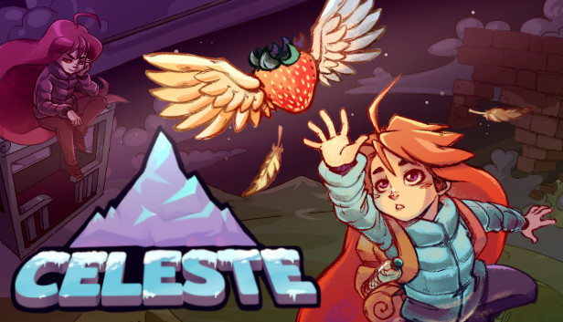
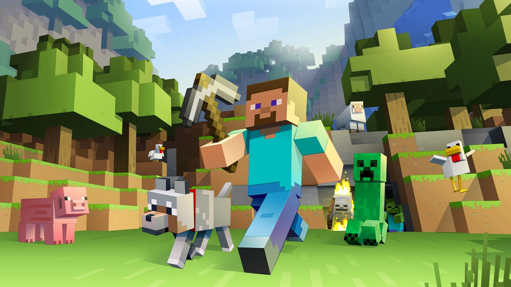

-
Celeste

Celeste es un aclamado juego de plataformas en 2D donde controlas a Madeline en su ascenso a una montaña mágica. Destaca por su dificultad exigente pero justa, con mecánicas de salto y un "dash" aéreo muy precisos. Más allá de su jugabilidad, es famoso por su conmovedora historia sobre la salud mental y la superación personal.
-
Minecraft

Minecraft es un mundo infinito de bloques donde exploras, extraes recursos y construyes cualquier cosa que imagines. Puedes jugar en modo Supervivencia, luchando contra monstruos y buscando comida, o en Creativo, con recursos ilimitados para diseñar sin restricciones. Es, esencialmente, un lienzo digital de libertad total.
-
Undertale

Undertale es un RPG único donde caes en un mundo subterráneo lleno de monstruos. Su mayor característica es que no necesitas matar a nadie: puedes elegir luchar o usar la "Piedad" para hacerte amigo de tus enemigos. El juego recuerda tus decisiones, cambiando la historia y el tono según cómo elijas interactuar con su carismático elenco.